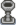
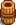
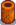

Goldfeuerschale
| Goldfeuerschale | |
| Bietet eine mäßige Menge Licht. | |
| Information | |
| Quelle | Herstellung |
| Verkaufspreis | Unverkäuflich |
| Herstellung | |
| Rezept von | Schreinerladen ( |
| Zutaten | |
Die Goldfeuerschale ist eine herstellbare Beleuchtung. Sie spendet Licht in der Nacht. Rechtsklick auf die Feuerschale macht das Feuer an oder aus.
Feuerschalenrezepte müssen in einer bestimmten Reihenfolge beim Schreinerladen gekauft werden. Das Kaufen einer Feuerschale schaltet die Nächste frei.
 Holzfeuerschale (
Holzfeuerschale ( 250 G)
250 G)-  Steinfeuerschale (400 G)
-  Fassfeuerschale (800 G)
-  Stammfeuerschale (800 G)
 Goldfeuerschale (1.000 G)
Goldfeuerschale (1.000 G) Geschnitzte Feuerschale (2.000 G)
Geschnitzte Feuerschale (2.000 G) Skelettfeuerschale (3.000 G)
Skelettfeuerschale (3.000 G)- Marmorfeuerschale (5.000 G)
| Herstellbare Beleuchtung | |
|---|---|
| Herstellbare Beleuchtung | Fackel • Fassfeuerschale • Geschnitzte Feuerschale • Goldfeuerschale • Holzfeuerschale • Kürbislaterne • Lagerfeuer • Laternenpfahl, Eisen • Laternenpfahl, Holz • Marmorfeuerschale • Skelettfeuerschale • Stammfeuerschale • Steinfeuerschale |